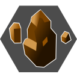

基礎知識
戦闘関係

魔王山では通常のランダムエンカウントの他に、扉の前で4回ボス戦がある。
扉の前に敵シンボルが立っている訳ではなく、その地点に立つとイベント後に強制的に戦闘が開始になるので注意。
一人旅であり、ザコ戦もそこそこ手応えがあるため、こまめにセーブしながら進めること。ボス撃破後は必ずセーブ、各所の扉に近づく前も念の為セーブすると良いだろう。
ランダムエンカウントのザコ敵は、最初に来た時とは異なる敵・パーティ編成で登場する。
敵パーティ一覧 > 魔王山・洞窟エリア（魔王討伐後）及び、敵パーティ一覧 > 魔王山・廃墟エリア（魔王討伐後）を参照。
ここまでで得られる装備を身に着け、「治り草」を20～30個程度確保した上で、魔王山突入時にレベルが10になっていれば（多少戦闘に歯ごたえがある程度で）突破可能。
リメイク版では戦闘システムが一新されたため、ボス戦の難易度がSFC版より下がっていることもあり、レベル10未満でも戦い方次第で勝てるが、オルステッドのレベルが低いと攻撃の命中率がいまいちなので、長期戦になりがち。「治り草」を多めに用意していないときつい。
また、ボスがそこそこ経験値をくれるため、ラストバトル前にレベル12くらいまで上がる。
一対一の戦闘が続くので、当攻略の戦闘テクニックも参考にしていただきたい。
戦闘がきついと感じたら、一度魔王山から出て少しレベル上げをしてみると楽になるだろう。装備を整えるのも忘れずに。
強力な装備（防具・アクセサリー）を、離脱した仲間に持ち逃げされてしまい装備品が足らないという場合も、レベル上げすることでフォローできる。
「治り草」は幾つでも手に入るのでピンチの時にはためらわず使うか、あるいは逃げるかするように。「治り草」の回復量は150～179、「アリスのビスケ」の回復量は999固定で全回復することも覚えておくと良い。
ザコ敵の「○○フォビア」という名前の敵のほとんどがやっかいな状態異常の付いたスキルを使ってくる。オルステッドは状態異常の腕封じや酔い状態になるとほとんどのスキルが使用不可能になるので、状況にもよるが面倒な状態異常にされたら逃げた方が安全。また、酔い状態はアクセサリー「ユニコーンホーン」を装備していれば防げる。
オルステッドはレベル9以降で待機時間のあるチャージスキルをいくつか覚えるが（「ドラゴンソウル」「レイザーソニック」「デストレイル」）、一人旅ではチャージ待機中にオトリになってくれる仲間がいないこともあり、敵の位置や行動ゲージに気をつけないと活用しにくい。使うなら戦闘開始直後、敵の行動ゲージに余裕があるタイミングがおすすめになる。
3×2マス位置から攻撃できる「インケイジ」「ジャンプショット」と、吹き飛ばし可能な周囲攻撃の「スピンドル」、向き変えの「ハンマーパワー」でだいたい対応できるはず。
以降は、魔王山突入時点でオルステッドのレベル10程度を想定した攻略。目安となるダメージ量を記していることもあるが、レベル10以上かつ「ブライオン」を装備している前提とする。
楽に進めていきたいという場合は、レベル上げの手間はかかるが、レベルを12まで上げて「ヘキサフランジ」を覚えてから魔王山に向かうと良い。前ページのとおり、勇者の山のナギーベア×2が経験値を多めにくれる。
Hit数の高い「ヘキサフランジ」を3×2マス対角線で撃つと大ダメージが出せ、ボス戦もさほど苦労せず突破できる。
どのボスも麻痺が効くため、「ヘキサフランジ」だと追加効果の麻痺も低確率だが入ることがある。
出現場所：最初のフロアの左上扉の手前（下マップ扉Aの前）

| クラウストロＰＨ | |
|---|---|
| HP | 336 |
| 弱点 | |
| 耐性 | |
| 敵パーティレベル[仮] | 14 |
| スキル | 向き | 効果 |
|---|---|---|
↖↑↗ ←■→ ↙↓↘ | 射程1、範囲1×1、吹き飛ばし、麻痺 | |
| 地震 | 全範囲 | |
□↑□ ←■→ □↓□ | チャージスキル、射程1～3、範囲3×3、吹き飛ばし、ステータスダウン | |
| セメント攻撃 | □□□ □■→ □□↘ | チャージスキル、射程1～2、範囲1×1、石化 |
※スキルの向きは右下向きの場合
初期配置：
石化の状態異常付きの「セメント攻撃」（正面1～2マス）と、麻痺の状態異常付きの「なぎ倒し」（周囲8方向1マス）が危険な相手。
「セメント攻撃」「ジャイロプレス」はチャージスキルなので、クラウストロＰＨの行動ゲージが赤くなったら範囲外に移動すれば当たらないが、チャージが短めなので、阻止したり逃げる余裕がない可能性もある。よって基本は「セメント攻撃」「ジャイロプレス」の範囲に立たない、つまり3×2マス対角線位置（→解説）を維持すること。
風属性弱点なので、「ソードビュー」を3×2マス対角線位置で地道に当て続け、3×2マス対角線位置の維持が確実。オルステッドがレベル11なら「ジャンプショット」、レベル12以上なら「ヘキサフランジ」で良い。
クラウストロＰＨには全体攻撃の「地震」があるので、どこに居ても何らかの攻撃をくらう。
ただし「地震」以外のスキルは上に書いたとおり、状態異常を引き起こして危険なので、食らわない位置取り（3×2マス対角線位置）を維持し続けるように。
「地震」には状態異常の効果はついていない上、SFC版より威力が下がっているので（とはいえレベルと装備次第だが100以上のダメージを食らう）、「治り草」などでHPの回復さえ気をつければ問題ない。ピンチの時は回復量の高い「アリスのビスケ」を使っても構わない。戦闘前に防御最優先で頭・腕装備を変更しておくのも良いだろう。
SFC版同様に「ハンマーパワー」を右下位置で当て続けて回転嵌めをする方法でも構わないが、回転が失敗する可能性もあること、リメイク版では行動ゲージの仕様から回復を挟みつつ3×2マス対角線位置を維持して戦う方が安全であるため、確実性を求めるのであれば回転嵌めより3×2マス対角線位置からの攻撃がおすすめになる。
回転嵌めより3×2マス対角線位置からの攻撃の方が確実かつ無難なのは、この先のボス戦でも同様。
SFC版と同じく、一定確率で「ロックフィスト」を落とす。中世編で「ロックフィスト」を入手する方法はクラウストロＰＨのドロップしかないので、欲しいのなら戦闘前のデータをセーブしておき、落とすまでロードを繰り返して戦うことになるが、攻略上必須ではないので、アイテムコレクターでない限りドロップしなくても気にしなくて良い。
また、わざとチャージスキルの溜めを狙う方法もある。
「なぎ倒し」を食らわない位置かつ、「ジャイロプレス」「セメント攻撃」を食らう位置まで移動して「ステイ」で待機、クラウストロＰＨがチャージしてきたら1マス移動して攻撃、相手の攻撃を空振りさせる方法であるが、全範囲攻撃の「地震」を食らう可能性が常にあるため注意が必要。ある程度戦闘システムに慣れている人向けの攻略方法である。
次のスコトフォビア戦までに、オルステッドのレベルを11に上げて「ジャンプショット」を覚えておくと楽。
出現場所：3番目のフロアの扉の手前（下マップ扉Cの前）

| スコトフォビア | |
|---|---|
| HP | 400 |
| 弱点 | |
| 耐性 | |
| 敵パーティレベル[仮] | 14 |
| スキル | 向き | 効果 |
|---|---|---|
□□□ □■→ □↓↘ | 射程無限、範囲1×1、ステータスダウン | |
↖↑↗ ←■→ ↙↓↘ | 射程1～2、範囲1×1 火/水/風/土/精/善/悪属性攻撃への反撃 |
※スキルの向きは右下向きの場合
初期配置：
鋭属性弱点なのだが、鋭属性の「Ｖシャイン」など敵に隣接しなければ当たらないスキルは、スコトフォビアから攻撃をくらいまくることになるので危険。
また、鋭属性の遠距離攻撃「レイザーソニック」は待機時間があるので、ここまでで「ジャンプショット」を覚えていたら、3×2マス対角線位置などで「ジャンプショット」を連発した方が安全な上、「レイザーソニック」と「ジャンプショット」のダメージ量は大差ない。攻撃時は反撃の「魔力吸引」（8方向1～2マス）を喰らわない位置取りで。
「ジャンプショット」がない場合は3×2マス対角線位置から「ソードビュー」などで地道に攻めるか、動き回りながら相手の行動ゲージを見て「レイザーソニック」。「治り草」を大量に所持しているのなら、スコトフォビアに隣接し、「治り草」で回復しながら反撃の「プラスリンク」のみで攻撃していくという手も一応はある。
この時点で「ヘキサフランジ」まで覚えていたら、高ダメージが入る。
正面3方向・距離無限で出してくる「暗黒球体」をくらってステータスが下がったら、距離を取り、「治り草」のステータスアップで打ち消すこと。
SFC版では反撃専用だった「魔力吸引」だが、リメイク版では通常攻撃としても使用するので、側面や背面に回り込む際にはスコトフォビアとの位置や行動ゲージに注意。威力自体はさほどではないが、連発されて回復されるとやっかいなので食らわないよう立ち回るように。
倒すと高確率で「デモンズクラウド」を落とす。SFC版ではここで入手しておくとこの後の戦闘で役立つ場面があったが、リメイク版ではなくても問題ないので、入手にこだわる必要はない。
出現場所：5番目のフロアの扉の手前（下マップ扉Dの前）

| アクロフォビア器 （ | |
|---|---|
| HP | 125 |
| 弱点 | - |
| 耐性 | - |
| 敵パーティレベル[仮] | 15 |
| アクロフォビア （BREAK DOWN） | |
|---|---|
| HP | 400 |
| 弱点 | |
| 耐性 | |
| スキル | 向き | 効果 |
|---|---|---|
□□□ □■→ □↓↘ | 射程2～3、範囲1×1 | |
□□□ □■→ □↓↘ | チャージスキル、射程1～3、範囲1×1、吹き飛ばし、90度回転、後退 |
※アクロフォビアのスキル。アクロフォビア器は一切攻撃してこない。スキルの向きは右下向きの場合
初期配置：
アクロフォビア器は一切攻撃してこないが、4体いるアクロフォビアは遠距離攻撃を使ってくる。「アクロバット」はチャージスキルなので、チャージ状態になったら移動すれば回避可能。
アクロフォビアが行動し始める前に、フィールド左上にいる、リーダーのアクロフォビア器だけ狙うのがおすすめ。
「ジャンプショット」を覚えているのなら、初期位置から左に2マス移動して、「ジャンプショット」をアクロフォビア器に2回当てて、BREAK DOWN。
覚えていないのなら、アクロフォビア器の右下マスまで移動して「ハンマーパワー」を2回当てて、BREAK DOWN。
移動中にアクロフォビアから攻撃を食らっても、ある程度のレベルかつ防具が整っていれば耐えきれる。近くのアクロフォビアがチャージ状態になっても、アクロフォビア器だけ攻撃し続けて問題ない。
一定確率で落とすドロップアイテムはアクロフォビア器が「フレームアーマー」で、アクロフォビアが「アリスのビスケ」（SFC版ではアクロフォビアはアイテムドロップがなかったので、リメイク版追加要素）。
「アリスのビスケ」は高確率でドロップするが、「フレームアーマー」のドロップ率は低め。既に「フレームアーマー」を装備済みであればドロップを気にする必要はない。
次のフェミノフォビアは状態異常が面倒な敵なので、下の解説を元に、酔い・眠り耐性のある装備を身に着けておく。
出現場所：6番目のフロアの扉の手前（下マップ扉Eの前）

| フェミノフォビア | |
|---|---|
| HP | 560 |
| 弱点 | - |
| 耐性 | |
| 敵パーティレベル[仮] | 16 |
| スキル | 向き | 効果 |
|---|---|---|
□□□ □■→ □↓↘ | 射程1、範囲1×1、HP吸収 | |
□□□ □■→ □↓↘ | 射程1～2、範囲1×1、眠り、酔い |
※スキルの向きは右下向きの場合
初期配置：
SFC版では状態異常のコンボで中世編最強といっても過言ではない敵だったが、リメイク版では魔王山で拾える「ユニコーンホーン」で酔い状態、「悪夢のヘルメット」または「アルゴスの瞳」で眠り状態を防ぐことができるため、装備品さえ回収してあれば状態異常は怖くない。
「悪夢のヘルメット」は特攻が−20されてしまうマイナス効果もあるので、「ユニコーンホーン」＋「アルゴスの瞳」をアクセサリー枠に装備するのがおすすめだが、オルステッドは特攻依存スキルが「ムーンダウン」「ドラゴンソウル」のみなので、頭装備を「悪夢のヘルメット」にするか「アイスヘルム」にするかはプレイヤーの好みで構わない。
「ブライオン」装備であれば、「ジャンプショット」でダメージが平均100以上入るので、3×2マス対角線などから撃ち続け、近寄られたらフェミノフォビアの行動ゲージを見て側面に周るか、遠距離で一度「甘いささやき」を受けるなりして側面へ周り、再び3×2マス対角線などでひたすら「ジャンプショット」で攻撃する。
隣接すると使ってくる「とろける愛」はHP吸収攻撃であり、装備やレベルによるが100～150程度HPを吸収されてしまう。使われると戦闘が長引いてしまうので隣接はなるべく避ける。遠距離攻撃の「甘いささやき」の酔い・眠りの状態異常は防具で無効化できるので、距離を取りアイテム回復を挟みながら攻撃していけば問題なく撃破できる。
また、距離を取っていると、オルステッドに接近せず遠方でうろうろすることもあるので、動きと行動ゲージに注意しながら攻撃すること。
状態異常防止装備がない場合、行動ゲージを見ながら敵の攻撃の範囲外（側面や3×2マス対角線）へ回り込み「ジャンプショット」でひたすら叩いていく。
SFC版ほど頻繁に移動しないため、「治り草」でステータスアップしつつ叩けばSFC版ほど苦戦することはない。
なお、SFC版とは異なり、「デモンズクラウド」での行動異常は確実に発生する訳ではなくなったため、あてにはできない。行動異常に頼らずとも、行動ゲージの仕様上、フェミノフォビアと距離を取りやすくなっている。
ドロップアイテムは「アリスのビスケ」で、筆者が検討してみた限り、必ずドロップしている。
魔王がいた部屋の像を調べると階段が出現する。そこから隠し通路を進み、魔王山山頂の像に近づくとイベント、ラストバトルになる。
レベル10で魔王山に来た場合、おそらくこの時点でレベル12になり「ヘキサフランジ」まで覚えているはず。
「ロックフィスト」をクラウストロＰＨがドロップしていたら、万が一に備えて装備させておくと良い。なくても嵌めて倒せるので心配ない。
「ユニコーンホーン」も装備させたままにしておく。
| ストレイボウ | |
|---|---|
| HP | 505 |
| 弱点 | - |
| 耐性 | |
| スキル | 向き | 効果 |
|---|---|---|
□□□ □■□ □□↘ | 射程1～3、範囲1×1、麻痺 | |
| ブラウンシュガー | □□□ □■→ □↓↘ | 射程1、範囲1×1、酔い、特防↓(中) |
| アンバーストーム | □□□ □■→ □↓↘ | 射程1～2、範囲5×5、吹き飛ばし 電撃地形（ストレイボウは電撃地形ダメージ吸収） |
□□□ □■→ □↓↘ | 射程無限、範囲3×3、石化、冷水地形 | |
□□↗ □■→ ↙↓↘ | 射程1～2、範囲3×3 反撃専用（手/足/突/鋭/締/飛/火/水/風/土/精/悪属性攻撃への反撃） |
※スキルの向きは右下向きの場合
初期配置：
ストレイボウのステータスや使用スキルは、離脱時の状態に関わらず、上に記した状態で固定のようである。
一対一でのラストバトルになるが、SFC版と同じ方法で嵌めて倒せる。
3×2マス対角線の位置取りで「インケイジ」や「ヘキサフランジ」を繰り返せば相手から攻撃されることはない。反撃の「ブラックアビス」も範囲外なので当てられることはない。
「ヘキサフランジ」はHit数が低いと100少々で高ければ200以上、「インケイジ」でも60程度はダメージが出せる。「ムーンダウン」でも3×2マス対角線からの攻撃は可能だが、耐性属性に当たることもあり、ダメージ量は「インケイジ」よりも低く、眠り状態にすることもできないのでおすすめしない（完全無効かは不明だが、普通にオルステッドを育成してここまで来た場合、眠り状態にできることはまずない）。
また、背面方向へは「ブラックアビス」の反撃が来ないため、行動ゲージを見ながら常に背面を取り続けて、「カットワンウェイ」など位置変化せずチャージスキルではないスキルで攻撃し続けて倒すことも可能（つまり背面嵌め）。SFC版だと「ブラウンシュガー」の攻撃範囲がストレイボウの周囲8マスだったため、隣接していると側面や背面でも「ブラウンシュガー」を食らう可能性があったが、リメイク版では「ブラウンシュガー」が正面3方向にしか出せなくなっているので、背面嵌めが可能となっている。
背面嵌めの場合、ストレイボウの動きが中世編最初の戦闘と同じく若干変則的であることと、この戦闘におけるストレイボウの見た目が全体的に暗く、向きをやや判断しにくいため（特にNintendo Switchの携帯モードなど、小さめの画面でプレイしている時）、ストレイボウの向き変え方向に常に注意する必要がある。
SFC版よりストレイボウのHPが低下していることや、行動ゲージにより嵌めやすくなったこともあり、位置取りにさえ注意すれば、敢えて相手の攻撃が見てみたいという場合を除き、苦労せず倒せるだろう。
逆に言えば、ストレイボウの攻撃範囲内にいる場合はそこそこ危険。
「ブルーゲイル」の麻痺、「シルバーファング」の石化、反撃の「ブラックアビス」→通常攻撃のコンボ、「アンバーストーム」で電撃地形を出された場合は地形ダメージを吸収して回復してくるなど、危険な攻撃を多数所持している。SFC版ではステータスの関係でまず「シルバーファング」での石化は入らなかったが、リメイク版では低確率で石化も食らう。
また、「アンバーストーム」に吹き飛ばし効果があるため、状態異常と合わせ、チャージスキルは中断される可能性もある。
ストレイボウの正面にいる場合、「アンバーストーム」の使用確率が比較的高めであることに注意。
嵌めることで一切攻撃させずに倒せるが、ストレイボウはスキル使用時に、このバトルのみの専用セリフがあるので、気になったら事前セーブをして見てみるのも一興。
ただし上に記した通り、危険な攻撃が多いので、運が悪いと石化でゲームオーバーの可能性もある。とはいえ、ゲームオーバー時のみのストレイボウのセリフもあるので、こちらも敢えて見てみるのも良いだろう。
クラウストロＰＨがドロップする「ロックフィスト」を装備していれば石化の心配はないが、麻痺を防ぐ装備は中世編にはないので、「ブルーゲイル」の麻痺にも注意が必要。「治り草」でまめに回復しながら待機すると良いだろう。HPを回復する時も、3×2マス対角線位置で。
ちなみに、「ミラードライブ」が水属性反撃、「スピンドル」が水・風属性反撃で出せるため、隣接している時に「ブルーゲイル」「シルバーファング」を食らった場合、オルステッドが状態異常にならなければ反撃が出せる。ストレイボウの攻撃待ちの場合、反撃で倒してしまう可能性もある、ということになる。
「ブラウンシュガー」の酔い状態は「ユニコーンホーン」で無効化可能。「ブラウンシュガー」には行動異常の混乱の効果もあるが、味方キャラが行動異常にかかることはない。
また、「ブラックアビス」は、SFC版だと手/足/突/締/飛/背/火/水/風/土/精/悪属性に対する反撃だったが、リメイク版では鋭属性攻撃に対しても反撃するよう設定されており、鋭属性攻撃（「カットワンウェイ」「Ｖシャイン」「レイザーソニック」など）にも反撃してくる。
ストレイボウを撃破すると中世編エンディング。最終編がプレイ可能となる。
クリアデータについては、基礎知識 > セーブ > 中世編・最終編のセーブデータについてを参照されたし。
SFC版では最終編のセーブデータに様々な制限があったが、リメイク版では、最終編開始後もそれ以外のシナリオの再プレイが可能であり、最終編自体も主人公を選び直して最初からやり直すことが可能なので、これまでのセーブデータを上書きしても問題はない。